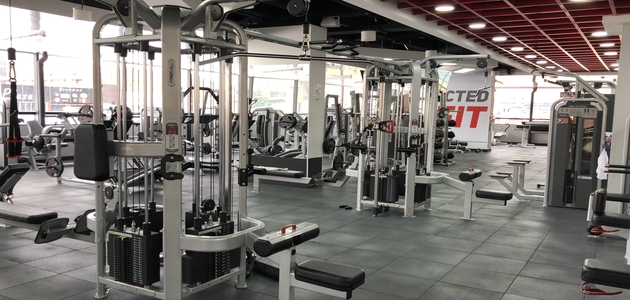
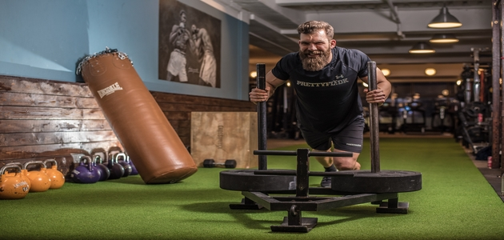
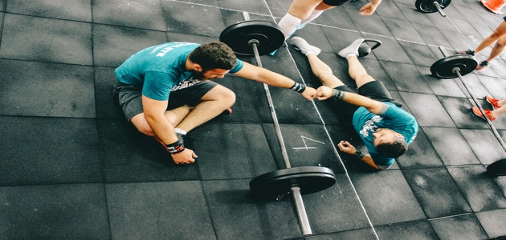
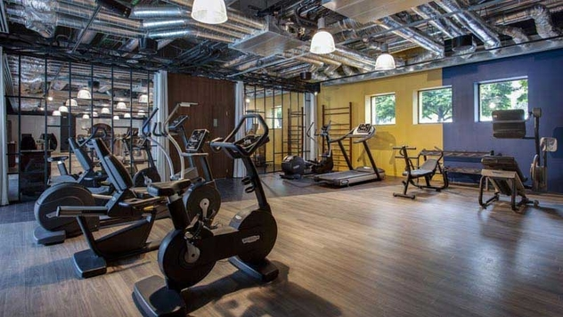

|  | DES ESPACES UNIQUES Avec Fitness Park, améliore ta condition physique, tonifie ton corps et développe ta masse musculaire. Grâce à des espaces adaptés sur plus de 1000m², façonne tes entraînements à la perfection : L’espace musculation, avec un large choix de machines à poids libres ou guidées et haltères. Idéal pour le renforcement musculaire et la prise de muscle. L’espace cardio training, avec des appareils connectés dernière génération (tapis de course, rameur, vélos elliptiques, etc.). Parfait pour te remettre en forme, la perte de poids rapide et tonifier tes abdos. L’espace cross-training pour tes entraînements les plus intensifs. Afin de brûler des calories en un temps records ou pour une préparation physique complète. Les salles de cours coachés ou virtuels pour te surpasser en étant accompagné(e). Réalise tes cours de sport selon tes envies : circuit-training, stretching, pilates, cycling, boxing, HIIT. |
DES ESPACES UNIQUES Avec Fitness Park, améliore ta condition physique, tonifie ton corps et développe ta masse musculaire. Grâce à des espaces adaptés sur plus de 1000m², façonne tes entraînements à la perfection : L’espace musculation, avec un large choix de machines à poids libres ou guidées et haltères. Idéal pour le renforcement musculaire et la prise de muscle. L’espace cardio training, avec des appareils connectés dernière génération (tapis de course, rameur, vélos elliptiques, etc.). Parfait pour te remettre en forme, la perte de poids rapide et tonifier tes abdos. L’espace cross-training pour tes entraînements les plus intensifs. Afin de brûler des calories en un temps records ou pour une préparation physique complète. Les salles de cours coachés ou virtuels pour te surpasser en étant accompagné(e). Réalise tes cours de sport selon tes envies : circuit-training, stretching, pilates, cycling, boxing, HIIT. |
 |
|  | DES ESPACES UNIQUES Avec Fitness Park, améliore ta condition physique, tonifie ton corps et développe ta masse musculaire. Grâce à des espaces adaptés sur plus de 1000m², façonne tes entraînements à la perfection : L’espace musculation, avec un large choix de machines à poids libres ou guidées et haltères. Idéal pour le renforcement musculaire et la prise de muscle. L’espace cardio training, avec des appareils connectés dernière génération (tapis de course, rameur, vélos elliptiques, etc.). Parfait pour te remettre en forme, la perte de poids rapide et tonifier tes abdos. L’espace cross-training pour tes entraînements les plus intensifs. Afin de brûler des calories en un temps records ou pour une préparation physique complète. Les salles de cours coachés ou virtuels pour te surpasser en étant accompagné(e). Réalise tes cours de sport selon tes envies : circuit-training, stretching, pilates, cycling, boxing, HIIT. |
DES ESPACES UNIQUES Avec Fitness Park, améliore ta condition physique, tonifie ton corps et développe ta masse musculaire. Grâce à des espaces adaptés sur plus de 1000m², façonne tes entraînements à la perfection : L’espace musculation, avec un large choix de machines à poids libres ou guidées et haltères. Idéal pour le renforcement musculaire et la prise de muscle. L’espace cardio training, avec des appareils connectés dernière génération (tapis de course, rameur, vélos elliptiques, etc.). Parfait pour te remettre en forme, la perte de poids rapide et tonifier tes abdos. L’espace cross-training pour tes entraînements les plus intensifs. Afin de brûler des calories en un temps records ou pour une préparation physique complète. Les salles de cours coachés ou virtuels pour te surpasser en étant accompagné(e). Réalise tes cours de sport selon tes envies : circuit-training, stretching, pilates, cycling, boxing, HIIT. |
 |
| Jour | Matin | Après-midi | Soir |
|---|---|---|---|
| Lundi | 9h-13h | 13h-18h | 18h-22h |
| Mardi | 9h-13h | 13h-18h | 18h-22h |
| Mercredi | 9h-13h | 13h-18h | 18h-22h |
| Jeudi | 9h-13h | 13h-18h | 18h-22h |
| Vendredi | 9h-13h | 13h-18h | 18h-22h |
| Samedi | 10h-13h | 13h-17h | ....... |
| Dimanche | 10h-13h | 13h-17h | ....... |